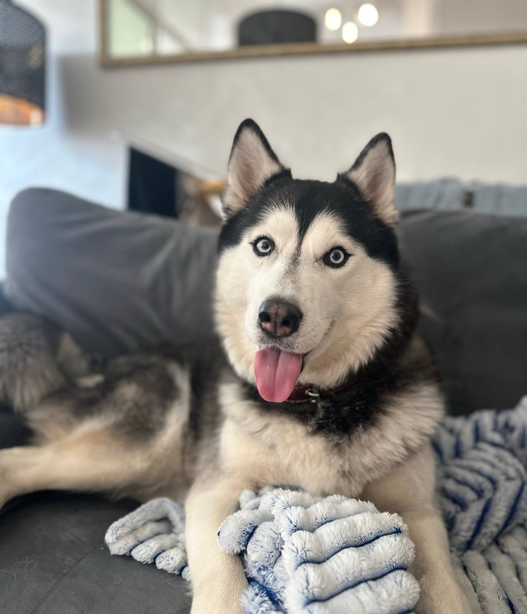
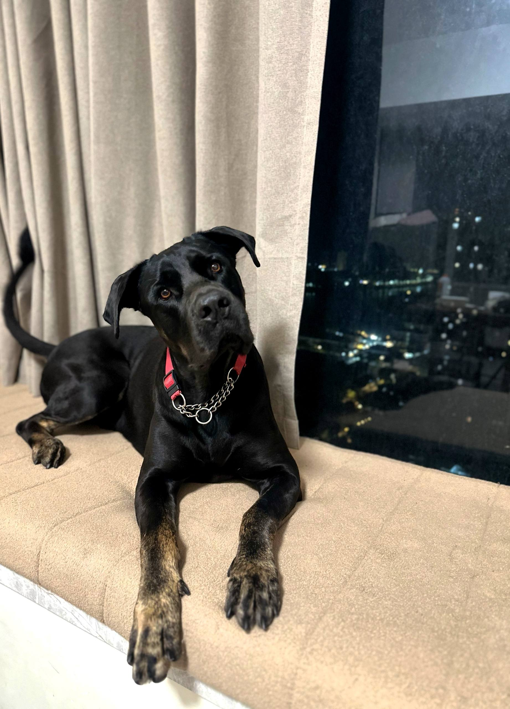

ការផ្ញើសត្វនៅផ្ទះ
ឆ្កែ និងឆ្មាស្នាក់នៅក្នុងបរិយាកាសផ្ទះ មិនមែនក្នុងទ្រុងស្នាក់នៅបែបសណ្ឋាគារសត្វទេ។
 Pet Houseសេវាថែទាំសត្វចិញ្ចឹមនៅភ្នំពេញ
Pet Houseសេវាថែទាំសត្វចិញ្ចឹមនៅភ្នំពេញ

ភ្នំពេញ · សេវាផ្ញើសត្វចិញ្ចឹមបែបនៅផ្ទះ
Pet House ផ្តល់សេវាផ្ញើឆ្កែ និងឆ្មានៅផ្ទះក្នុងរាជធានីភ្នំពេញ។ មិនមែនជាកន្លែងដាក់សត្វក្នុងទ្រុងទេ គឺជាផ្ទះដែលមានការយកចិត្តទុកដាក់ និងផ្ញើរូបថត ឬវីដេអូឱ្យម្ចាស់ជាប្រចាំ។
សេវាកម្ម
យើងព្យាយាមរក្សាទម្លាប់នៃការញ៉ាំ ដើរលេង និងសម្រាករបស់សត្វនីមួយៗ។ សម្រាប់សត្វប្រភេទផ្សេងទៀត សូមទាក់ទងមកជាមុន ដើម្បីបញ្ជាក់ថាយើងអាចទទួលបានឬទេ។
ឆ្កែ និងឆ្មាស្នាក់នៅក្នុងបរិយាកាសផ្ទះ មិនមែនក្នុងទ្រុងស្នាក់នៅបែបសណ្ឋាគារសត្វទេ។
ការដើរលេង លេងកម្សាន្ត ផ្តល់អាហារ និងសម្រាក តាមទម្លាប់របស់សត្វ។ មានកន្លែងសម្រាប់ឆ្កែដើរលេងនៅអគារ។
សម្រាប់កូនឆ្កែ កូនឆ្មា សត្វចាស់ ឬសត្វខ្លាចងាយ សូមប្រាប់តម្រូវការជាមុន។ ការផ្តល់ថ្នាំអាចពិភាក្សាជាមុនបាន។
ផ្ទះ មិនមែនកន្លែងដាក់ទ្រុង
ផ្ទះមានម៉ាស៊ីនត្រជាក់ ហើយយើងនៅផ្ទះភាគច្រើននៃពេលវេលា។ យើងទទួលសត្វចំនួនកំណត់ ដើម្បីឱ្យសត្វនីមួយៗទទួលបានការថែទាំសមរម្យ។
Pet House ផ្តល់សេវាផ្ញើឆ្កែ និងឆ្មានៅផ្ទះក្នុងរាជធានីភ្នំពេញ។ មិនមែនជាកន្លែងដាក់សត្វក្នុងទ្រុងទេ គឺជាផ្ទះដែលមានការយកចិត្តទុកដាក់ និងផ្ញើរូបថត ឬវីដេអូឱ្យម្ចាស់ជាប្រចាំ។
រូបថតសត្វដែលធ្លាប់ស្នាក់នៅ
រូបថតសត្វដែលធ្លាប់ទទួលការថែទាំនៅ Pet House។ សូមមើលរូបថតបន្ថែមលើ Instagram។


.jpg)

របៀបកក់
ផ្ញើថ្ងៃចូល ថ្ងៃចេញ ប្រភេទសត្វ អាយុ ទម្លាប់ និងតម្រូវការពិសេស។
យើងពិនិត្យកន្លែងទំនេរ តម្លៃ និងភាពសមស្របជាមួយសត្វដែលកំពុងស្នាក់នៅ។ អាចណាត់ជួបជាមុនបាន។
ពេលសត្វស្នាក់នៅ យើងរក្សាទំនាក់ទំនង និងផ្ញើព័ត៌មានអំពីសត្វជាប្រចាំ។
សំណួរញឹកញាប់
យើងផ្តល់សេវាផ្ញើឆ្កែ និងឆ្មាជាចម្បង។ សម្រាប់សត្វប្រភេទផ្សេង សូមទាក់ទងមកជាមុន។
ទេ។ Pet House ជាសេវាផ្ញើសត្វបែបនៅផ្ទះ មិនមែនកន្លែងដាក់ទ្រុងទេ។
បាទ/ចាស យើងផ្ញើរូបថត និងវីដេអូឱ្យម្ចាស់ជាប្រចាំ។
អាចទាក់ទងដើម្បីណាត់ជួប និងសួរអំពីការសាកល្បងស្នាក់នៅមួយថ្ងៃ។
តម្លៃដែលបង្ហាញលើគេហទំព័រចាប់ពី 6.99 ដុល្លារក្នុងមួយថ្ងៃ។ តម្លៃពិតអាស្រ័យលើប្រភេទសត្វ រយៈពេល និងការថែទាំ។ សូមទាក់ទងដើម្បីទទួលតម្លៃជាក់លាក់។
ទាក់ទង Pet House
សូមផ្ញើកាលបរិច្ឆេទ និងព័ត៌មានអំពីសត្វ។ យើងនឹងឆ្លើយតបពីកន្លែងទំនេរ និងតម្លៃជាក់លាក់។ អាចសួរអំពីការទទួល និងជូនសត្វក្នុងភ្នំពេញបាន។